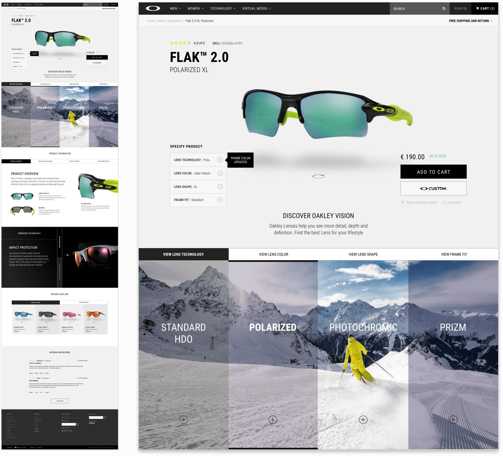

SPD: Oakley Re-Design
- Role:UX Research & Design
- Context: Master's Project
- Date:July 2017
Project Overview
Analytics revealed that the Oakley website suffered from performance issues in terms of overall navigation, product browsing and search functions, as well as product information. The challenge was to re-design the e-commerce website in a way which corrected these problems.
User Testing
Our group wanted to conduct user testing early in order to identify the strengths and weaknesses behind the existing Oakley website. Even though we completed a thorough web analysis, we wanted to make sure we didn’t overlook common issues for users with varying mental models.
We sought to test a variety of actions throughout the website to give our group a definitive direction and purpose to guide us in our re-design process.
Throughout our user testing phase, we conducted tests with individuals that widely varied in terms of athletic backgrounds and mental models.
Discovery & User Insights
After conducting our user testing, our group gained valuable insight and gave us many components to improve upon. The main feedback we received from our user testing included:
-
Confusing Product Titles
Product Titles & Names are confusing to people who aren't familiar with Oakley products and technology. Seemingly repeating product tiles with minor variations increases the difficulty users have in selecting the correct product for their lifestyle needs.
-
No Lens Technology Descriptions
There are no descriptions between varying lens technologies, rather users are expected to conduct this research, or read large chunks of technical jargon. This resulted in a low level in terms of ability in differentiating or understanding different types of lens technologies.
-
Lack of Comparison Tool
How are clients supposed to know the difference between the Flak 2.0 XL and Flak 2.0 PRIZM?
While clients could aesthetically view the differences in products, there was a lack of understanding behind the technical differences between products.
The majority of the issues that were revealed within our user testing seemed to be related to a lack of understanding of Oakley lens technologies as well as differentiating amongst various products within product listing pages.
After analysing the feedback from our user testing sessions, our goal was to solve these issues by educating through simplicity. We ultimately sought to produce a solution which focused on:
-
Simplification of Product Listing Pages
-
Improve education of Oakley lens technologies
-
Increase product knowledge through direct comparisions
The Design Process
The Solution
While our user testing showed many aspects of the website that could have benefitted from some general housekeeping, we sought to apply our solutions to the main components of the Oakley website in terms of purchasing products. This resulted in us largely focusing on the Product Listing and Product Detail pages.
Product Listing Pages
During our user testing, clients had a high level of difficulty in assessing products and weren’t sure what product would be correct for their needs without going to individual product pages. Our group attempted to solve these current user gaps within product listing pages by:
Grouping Products
Currently, Oakley displays each sunglass frame and lens technology combination as individual product listings. While this might be acceptable for clients who are familiar with Oakley, our users had difficulty in assessing the different items within product listing pages due to a seemingly endless list of products with minor variations, as well as the lack of information displayed to users.
Our group sought to fix this issue by grouping products together based on Frame Family, in order to reduce the clutter of products initially presented to users; all of the variations of products are now displayed on PLP’s within one product tile.

Suggested Usage
Without conducting research related to Oakley’s lens technology, it’s very difficult for the average user to determine what product is best for their specific lifestyle needs, unless they use the side/navigational filters.
To assist in the decision making process, our group included a “suggested usage” for each frame, stating what activities each product is most suitable for.
Comparison Tool
A major issue within the product listing page uncovered by our user testing was the inability to directly compare products. This was a big problem for clients that had multiple products they were interested in, as it required users to “pogo-stick” between pages in order to gather the necessary information to make their decision.
Our group decided to include a comparison tool within the product detail page to provide customers with a quick overview of product details and to quickly differentiate between product offerings.
The main objective behind the product comparison tool was to quickly provide users with enough information regarding products so they can differentiate between products both technically and aesthetically.
Product Detail Page
When re-designing the product detail page, our team wanted to streamline the decision making process to simplify purchasing decisions and educate clients about the different Oakley lens technologies.
Our user testing revealed a major disconnect between between clients and their ability to understand the various types of lens technologies, frame fits, as well as the different lens shapes that Oakley currently offers.
Many of the product variations that clients can choose from are largely dependent on visuals. It’s difficult to convey the different lens technologies through text without having large, technical, blocks of unreadable content. Taking this into consideration, our team decided to apply a very disruptive design approach towards the current product display page.
Despite product variation’s initially looking the same, they behave completely different once active. Instead of being regular drop-down menu’s that simply state the alternative options, they’re now a much more visual experience and educate users by visually showcasing the difference in options.
Lens Technology
In the current Oakley PDP, lens tech variations are presented to users in a simple text drop-down menu. Once a different lens tech is selected, users are taken to a different product page and are shown a completely new style of glasses.
User testing revealed the association between lens technology and aesthetics wasn’t clear to our users and resulted in confusion when selecting lens technologies. To correct this user gap, we updated the drop-down menu with visuals that shows users the exact style of glasses they would be purchasing with the associated lens technology choice.

Lens Color
Within the existing Oakley PDP, colour options are displayed as small thumbnail images sitting above the main product. When users interact with these, they are under the impression that they are simply changing the lens colour, however they are also changing the lens technologies. While the lens technology family (Polarised) might stay the same within the dropdown, the actual lens technology “sub-family” gets updated (Jade Iridium Polarised to Matte Grey Smoke Polarised).
To ensure that users are aware of this moving forward, we have moved the Lens colour option underneath the Lens Technology drop-down because the Lens Technology that is selected by the user actually effects the lens colours available.

Although these difference have already made a big improvement in users abilities to make purchasing decisions, there is still a disconnect between users and their understanding of Oakley Lens technologies.
Currently, Oakley expects users to go to the technology page to inform themselves about the different lens technologies Oakley offers within its existing products. While all the information is displayed within these sections, it requires users to do a lot of additional research.
Oakley Vision Tool
Our group sought to develop a solution that enhances clients understanding of Oakley lens technologies by visually demonstrating the different technologies in real life scenarios.
Upon scrolling past the 1st fold, users will be presented with our Oakley Vision tool. Within the tool, there are 4 separate tabs (Lens Technology, Lens Colour, Lens Shape & Frame Fit) each visually demonstrating the various customisable options prior to purchasing a product.
By having these various lens technologies visually demonstrated to clients, we aimed to improve their decision making process by enhancing their understanding of the lens technologies as well as providing them with a method to compare lens options and overall functionality in real-life scenarios.
The Oakley Vision Tool was designed so clients can learn everything about their purchase within the product detail page without having to conduct additional research on Oakley technology pages or Google.
Product Overview
Within the next section of our PDP’s, we included another set of tabs related to product information. Within this section, clients can learn more regarding product details, specifications, items included with your purchase as well as replacement parts and accessories.
Current product descriptions are large chunks of highly text, that often repeat information within the page. This is a problem for clients who just want a simple description of the product and some of the features that make this product unique/different from others.
Focusing on this, we chose to break down product details and tell the story of products in a visual way. Rather than overwhelming clients with long walls of text, we chose to breakdown product descriptions into 3 digestible components, only focusing on the core components of each product.

Final Takeaways
When designing our Product Detail Page, our group sought to develop a highly visual solution that simplified the decision making process for clients when making purchasing decisions. We aimed to achieve this by better educating clients in regards to Oakley lens technologies, product sizing and fitting as well as a improved and simplified product descriptions.
While we were quite disruptive in our final design, we ultimately believe we produce a highly effective Product Display Page that ultimately educates clients through simplification and interactive visual tools.
When initially tasked with the Oakley redesign project, our groups wasn’t quite sure as to where we could even start. After performing a website analysis and brand research, conducting user testing and consulting with the professors, we established a clear goal as a group. The goal of our redesign proposal was centred around educating clients through simplification.
Overall, our group feels that we have largely accomplished these goals and developed a realistic and effective solution for the current issues within the Oakley e-commerce website.